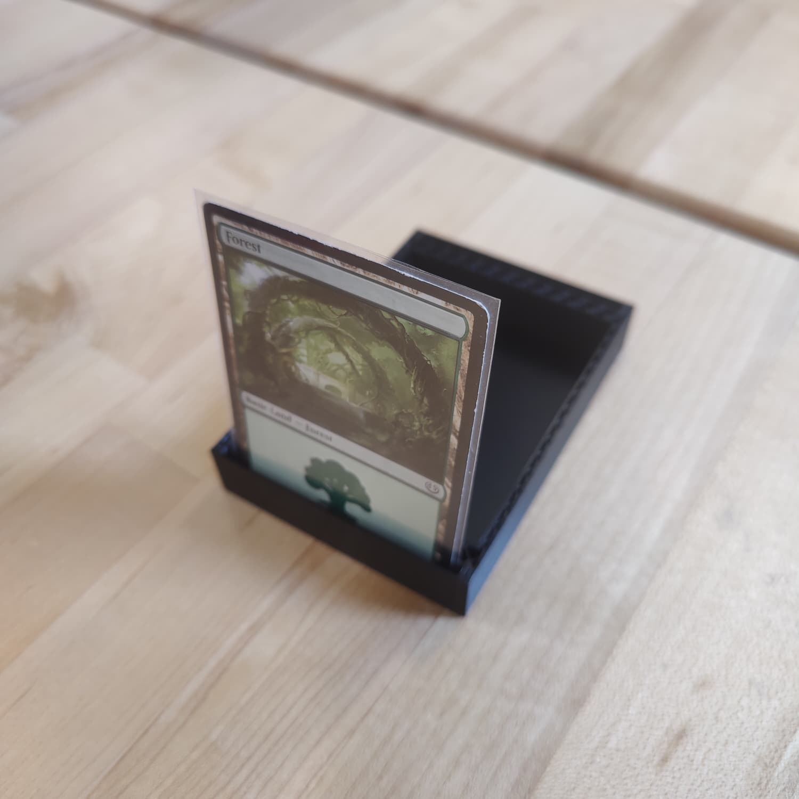

Moses's Engineering Portfolio
Engineering 11A
Engineering 11A


Check out this nametag! This is made with two different filaments, a white base and black text. I chose a relatively thin font, which resulted in the text quality being very poor overall. In retrospect I should have accounted for this, but it's not really that important. What was more important was that this was my first time swapping out filaments for a print, and now I know how.
This is a 3D print meant to push the limits of our printer's capabilities. It has several small, intricate structures meant to test the precision of the printer. Additionally, this was printed at a "fast" setting to further complicate the printing process. As expected, the printer ran into problems during the printing process. The most obvious is all the stringing that occurred throughout the print. All of the horizontal text is also barely readable. The underside of the overhang test is also very uneven. Considering where the printer struggled, I should make sure to choose a slower print speed if I'm creating something with fine text, or other small ridges/depressions. I'll also have to use supports for any overhangs.
Fun fact: I downloaded this model as a 3MF file. That means the file already had a lot of information about print settings, materials, and so on. If it was an STL file, it wouldn't have had any of this information.
This chair is a model I downloaded off of Thingverse, because I thought the idea of a 3D-printed chair that looks like a real-life chair that is shaped because of the materials it's made out of (planks of wood in this case) was very funny. I also wanted an action figure of mine to be able to sit in the chair, so the first step was to get the measurements right.
I wrote down my measurments of the figure on paper. I was very careful with these measurements, because a small error could result in the figure not fitting in the chair properly. After I had the measurements, I imported the model into TinkerCAD. Then, I adjusted the height, width, and depth of the chair so that the figure could sit in it comfortably.
The chair has a lot of overhangs, and needed a lot of supports. I removed some of the supports in areas where I felt the printer would be able to handle the overhangs, and for the most part I was right. However, there's still some visible fraying on the undersides of some parts of the chair.
Because of the large size of the print, I was initially going to print it with 0.2mm layers to speed up the process, but I was worried the detail of the space between the planks would get lost. I ended up printing it with 0.15mm layers instead. I also printed it at 17% infill, which I correctly predicted would be more than enough to support the wooden figure.
Nonetheless, I'm pretty happy with how the chair turned out. Even with the wonky scale, it's very clear what chair the print is supposed to be, and it's pretty funny to see Boxman sitting in it. Look at how comfortable he is!
If I were to print this again, I'm not sure if I would add more supports or remove them. While I could mitigate the threading under the overhangs, there was already so many supports that it was very annoying to remove all of them. I couldn't find a more efficent rotation to print it in, either.
This model is a box designed for a Magic The Gathering deck. I took a base model from Thingiverse and added two extra pockets to it.
Since I started with an existing model that was already the right size, I didn't have to worry about getting the dimensions right.
The model came with a cool dragon design, but I wanted to get rid of it. It was inlaid so I couldn't slice it off, so instead I converted the mesh into a solid object and then deleted the faces that made up the dragon.
Afterwards, I had space to add a pocket to both sides of the box. These pockets could both hold a couple extra cards, which would be useful if I wanted to have a couple additional cards that aren't in the main deck, or if I want to display a card to remember what's inside the box.

The print failed the first time, but after that, it works! The box fits the cards well, and the pockets on the side work the way I was hoping they would.
If I was to print this again, I'm thinking about getting rid of one of the pockets, and instead adding a hole in the upper part of the box on that side. That way, you'd be able to see the art on one of the cards if it was facing the right way, which would make it easy to see which deck is in the box.
This was the first iteration of the box I made to hold a simple electric clock. I initially intended to use a model that I soldered together myself, but I started to run out of time on the project so I just used a pre-built model instead. The clock is simple, with LEDs, buttons, resistors, and seven-segment displays all attatched to a motherboard.
To make the box, I first used digital calipers to measure the dimensions of the box. At this point in the project, I wasn't sure exactly which parts of the motherboard would be important to keep track of, so I decided to make as many measurements as possible. I measured the height and locations of the buttons, the size and locations of the power inputs, the locations of the seven-segment displays, and of course the overall dimensions of the clock.
To pursue the minimum viable product, I decided to make the box as simple as possible. The bottom of the box had one hole for the charging port, and the top of the box had one hole to view the numbers and LEDs. The top of the box wasn't attatched to the bottom in any way, instead simply resting on the bottom of the box. I decided this was a feature, not a flaw, because you would have to take the top off to be able to access the buttons.
Despite this simplicity, the box ended up not being a viable product. I made the mistake of not including enough allowance on the width and length of the box - because the model was only just big enough to house an object the exact size of my measurements, the actual box was too small for the actual motherboard.
And so I iterated on this design. The iteration was once again very simple: I just made the box much wider and longer, to the point that I was very confident it would be able to fit the motherboard. However, there was another problem - now that the clock could sit inside the bottom of the box, I realised that the box wasn't tall enough and couldn't put the top of the box on. In addition, the window for the display was shifted over when I made the box larger, so it was now off-center.
In retrospect I should have predicted these problems, but it's fine because I had more iterations to make anyway.
I continued to iterate on the design for the box using laser cutter designs. These designs were "flat pack", meaning that the whole box could be assembled using only shapes cut from a single piece of wood.
The first design I made unfortunately had another problem, where it was once again not long enough to fit the motherboard. This time, it wasn't because I didn't include allowances for my measurements, but rather, because I made a miscalculation while adding the finger joints to the model. The hole in the top to be able to push the buttons was also too small. But when trying to assemble it, these flaws gave me an idea: What if I left the front wall partially open, so that the buttons would be easier to access?
This was the final iteration on the box, and finally I had a viable prototype. It fits the clock, you can see the displays and LEDs, and there's a hole that you can connect a power cord through. I'm proud of how I was able to convert mistakes into new ideas throughout the process.
This is where the magic happens! 3D printing is a complex process, but once you have your model on a thumb drive, you're most of the way there. For example, these were the steps I took to print my name tag:
- Choose a machine that already has filament in it. Take the plate and wipe it down with a Kimtech wipe. (Apparently a bit of cleaning alcohol would have been ideal if we had it.)
- Put the plate back on, aligning it with the screws.
- Turn the printer on, and plug in the thumb drive. Start the print.
- Fill out the print job form, and give the printer a sticky note with the assigned number.
- When the printer starts beeping, take the filament out. Clean up any stray filament on the sheet (ideally without touching the sheet).
- Choose a new filament and insert it into the machine. You might have to cut the end of the filament to get it to fit. If you do, make sure to cut the filament at an angle.
- Get the printer started again. Return the other filament to the shelves. When you do so, weave the end of the filament around the little holes on the outside to prevent it from getting damaged or unravelling everywhere.
- When the print is done, take the whole metal plate out. Bend the plate back a bit to detach the nametag and any other filament on the plate.
- Return the plate and turn the printer off.
PrusaSlicer is a vital piece of software that allows you to convert 3D models into gcode files, which are instructions for the 3D printer. It has a lot of different tools and options, because it's the part of the process where you'll choose print quality, add supports, and arrange objects on the tray. It also has some basic modelling tools like Scale and Place, so you could use it if you already have a base model you want to make some quick modifications to.
Here's the template I used to make this website! I've already got some experience with HTML, so I spent some time overcomplicating things for myself before I eventually decided to just use this more simple template. I'm pretty happy with how the site looks overall. Using Git Pages was a bit of a hassle, but it's good that I'm getting more experience with it.
TinkerCAD is a web-based CAD software, which makes it very accessible. However, I found it very hard to use effectively. Since I needed to be percise with the scale of the chair, I wanted to measure different parts of the model, but the ruler tool didn't seem very exact and it was difficult to position it correctly on faces of the model. I ended up having to do a lot of math to make sure that the proportions were correct.
Compared to TinkerCAD, I felt much more at home in Fusion. It's a much more powerful tool, and has a lot more ways to manipulate objects. I was already used to the process of creating a sketch and then extruding that sketch, so I found it easy to start using all the tools that Fusion offers. The only thing that tripped me up is that Fusion has a different set of tools for meshes, solid objects, and other kinds of objects, and I didn't know which set of tools I needed to be using at first.
I forgot to take a picture of the laser cutter sorry
The laser cutter is a powerful machine that uses high-powered lasers to cut through materials like wood and acrylic. Compared to a 3D printer, it needs supervision while running, because issues during runtime can be much more dangerous than with a failed print. However, it's also much faster, and can cut extremely accurately in minutes rather than hours.
The laser cutter is also extreemly precise. While 3D models can have issues like ridging or threading, and won't always come out as the exact dimensions you give it, the laser cutter has no such limitations. This is in part because the laser itself is actually very small, so the width of the cut is negligible.
To create designs for the laser cutter, we used a software called LightBurn. It's a powerful app and it has a lot of different options. It's not the easiest to navigate, though, and there's a learning curve to using it. It's not always intuitive to get different shapes to snap together or be proportionate to one another.
Our first reading for this class was the Field Guide To Human Centered Design. The first few chapters of this book focus on the philosophy of human-centered design, and the importance of empathy in the design process. The book comes across as extremely optimistic, which isn't a bad thing, but it doesn't do enough to justify its assertments in my opinion. That being said, the ideas in the introduction feel solid overall, and seem like a good foundation to build a design process on.
A very important reading for this class was the handbook for the 3D printers we were using. I came back to this one many times throughout the class. It's a great handbook, because it's very comprehensive. Some things I noticed while reading it: Oh, so the reset button essentially restarts the whole machine? Thats good to know, I thought it was a more generic back/pause button.
- Im surprised they recommend regularly upgrading firmware. Usually my policy would be dont touch it unless theres a problem.
- Makes sense that the filament should be level with the printer.
- I see that you cant just yank the filament out at any time before replacing it, but you have to let the printer heat up first. I guess its bad for the engine to spin the wrong way.
- They say that a 45 degree angle is the point at which you should be using scaffolding.
- Using a brim for small prints seems like good advice. Ill have to remember that.
The Design Of Everyday Things is a book that interrogates the design of common tools and points out ways that they could be made better. The first chapter in particular spends a lot of time pointing out flaws in the designs of simple mechanisms, and how we often take these flaws for granted even though it's reasonable to expect these kinds of simple designs to be better executed. I really liked all the anecdotes in the chapter, because it made it easier to understand the author's point when I related to their struggles with doors and refrigerators.
This reading is another that puts forth a definition of what "design" is, and speculates on how to do it effectively. This book calls the process enginnering design, and comes at the concept from a much more objective angle.
Compared to the previous readings, I like this book's approach a lot more. The first chapter is comprised almost entirely of definitions after the introdcution, because the writers are looking to talk about design in a percise fashion.
Like the other readings, this one points out how good design is important by using a couple examples of bad design, and how those failures could have been avoided.
This book comes more directly to the same conclusion that other books eventually came to: Design is about making something that is resistant to mistakes, is accessible, and can be understood easily.

I really like this diagram in chapter 2. It's laid out in a spiral to represent how design isn't a linear process, and you'll often return to previous steps to gather more information or iterate on ideas before moving forward.
Chapter 2 focuses on what you need to do to start designing something, and it places a lot of emphasis on the customer who's ordering the design. It reminds me a lot of software development, where a company will order a website or an application, and it's up to the developers to make sure that the app meets the needs of the client.
This page was an intro on each of the 11 different kinds of design constraints. Each constraint is a different factor that limits some aspect of your design, whether that's something like saftey constraints making sure that people can't injure themselves by using the design incorrectly, or economic constraints forcing the design to be cheap enough to produce.
This reading has a similar definition of "constraints" to the last one, but not exactly the same. In particular, Engineering Design makes a distinction between "constraints" that a design must satisfy and "objectives" that a design is aiming to satisfy, while this website categorizes both of these as constraints.
While the reading is very comprehensive in describing every kind of constraint a design might contend with, there's a lot of overlap between different categories. Some categories of constraints are also examples of other kinds of constraints, like how Saftey constraints are one kind of Legal and Ethical constraint.
This web page was a reading on how to use digital calipers.
I liked the reading, and now I know how to use digital calipers.
This reading was also very simple. It explains what influences the accuracy of a 3D printer, and mostly focuses on how to maintain a 3D printer to keep it running well.
I think it's cool that PLA is a non-newtonian substance. The tip about slowing down the print speed for small features, to prevent the printer from cooling the print too much and shrinking it, was also really interesting.
This guide explained how to understand the specs of a printer, and the difference between accuracy and precision. The distinction is pretty simple, but its applications to 3D printing is very important.

I found this graph near the end of the reading to be particularly useful. I hadn't considered how I would have to factor in tolerance zones when I'm making two pieces that fit together, and I think this shows very succinctly how to take them into account.
This web page is a reading on inclusive design. It links to a lot of sub-articles on different aspects of inclusive design.
When I started reading this article, I was expecting a mostly customer-facing reading, with lots of examples of successful Microsoft products that have inclusive design. Instead, the reading seems to mostly be a learning resource, and it seems like it's made for Microsoft's employees rather than its customers.
This book is an analysis of inclusive design and how to approach it effectively. The bulk of chapter 1 was told through an example of inclusive design, where a teacher and his class worked together to design a lectern for a historian with dwarfism, who was too short to use a standard one.
One of the important points of this example is that inclusive design is often not about just making something that's "good enough". Amaanda, the historian, could have just stood on a stool or a box to reach the top of a standard lectern. But these kinds of solutions often come with compromises, and Amanda was looking for a better solution.
This chapter also spends a lot of time on the nature of disability, and how the disadvantages of disability are defined by the designed world around us and what people are expected to be able to do to interact with designs in an effective way. This wasn't a new concept for me, but it's important to consider and presumably will help contextualize the book's perspective on assistive design in later chapters.
Design justice, as this document describes it, is a process of critisizing and analyzing designs based on how effective they are for everyone in a community. The goal is a process of continous improvement spurred by a better understanding of what works for everybody. In the document's own words, "We prioritize design's impact on the community over the intentions of the designer."
The document makes big claims about the importance of design justice, especially in terms of where it can be applied. Design justice isn't just about people with disabilities - in fact, "disability" is only mentioned twice throughout the whole reading. Design justice is also for trans people, black people, women, and every other marginalized group.
The reading seems entirely focused just on what design justice is and what it can do, and doesn't give any examples or propose any courses of action. This is to be expected from an introduction, however in the reading's own words once again, "this is not a how-to manual." I'm skeptical of the book's approach to the subject, but I can respect that the writer wanted to focus only on the who, what, where, and why and leave the how to other sources.
This reading was a very exhaustive analysis of the potential enviromental benefits and dangers of 3d printing. It talked about how it compares to traditional manufactoring in terms of both enviromental impact when the product is being made, and when it's being used.
It eventually concluded that wnen today's 3d printing technology is scaled up to an industrial level, the manufactoring process is worse for the enviroment than injection molding, but there's potential for existing enviromentally freindly 3d printing technologies to become commercially viable in the future.
The reading also points out the other potential enviromental benefits of 3d printing, specifically that 3d printed products can use more sustainable materials, and that 3d printed products can function in more enviromentally freindly ways compared to alternatives. The reading uses an example of a 3d printed car which gets very good milage because it's lighter than other similar cars, therefore producing fewer emissions.
This article from 1998 is a high-level criticism of how enviromental movements were being conducted at the time, and presents some of its own alternatives.
The article describes the current "eco-efficiency" movement as one that focuses on reducing waste by recycling and extending lifetimes of materials, and minimizes harm to the enviroment by using as few harmful chemicals as possible. In short, the article is completely dismissive of this approach, because it's only a stopgap solution. The article argues that these practices only slow the degredation of the enviroment, rather than making any meaningful steps to stop or reverse it.
It also argues that these initiatives are inherently flawed because they aren't economically viable compared to more wasteful alternatives. The article as a whole places a very large emphasis on ecological initiatives not only being completely effective, but also the correct economic choice for the relevant industries.
The alterantive that the article presents is a world where recycling of matrials is brought to its fullest potential. Instead of throwing away products that they no longer want, consumers would instead be legally obligated to bring those products back to manufactorers, who would break down the product to re-use as many of the resources and parts as possible.
It also proposes that products should be made without any harmful impacts to the enviroment, or not made at all. They use the example of a textile manufactoring plant that partnered with the writers to create a new manufactoring process that used as few chemicals as possible. Afterwards, when testing the waste water from the plant, it was found that it was just as clean as the water the plant was using in the first place.
The article makes the claim that such an industry would produce no harmful impacts to the enviroment whatsover, while also not requiring any regulations to force that industry to follow this vision. In my opinion these claims are completely unsubstantiated, and the article doesn't make a good enough argument about how this scenario is possible, let alone how it could be achived.
Sustainable Development By Design is an extremely dense reading overviewing the entire design and manufactoring process as it relates to life-cycle considerations. Compared to many other readings, this one is much more data-driven, and backs up every claim it makes with solid evidence. Although the paper does put forth solutions and next steps, it feels like the goal of the paper is more to be a resource to understand the current state of industry, rather than a forward-thinking plan about the next big leaps on the subject.
To that end it accomplishes this goal very well. The paper reivews different types of waste and polluition, and where they come from, and it reviews different stages of a product's life cycle, and which stages have the highest enviromental impact, and it reviews where new design ideas come from, and what those designs need to achive to be both enviromentally freindly and successful designs.

This paper has some great diagrams, like this graph outlining the sources of the total enviromental impact from a hypothetical product. This diagram is used to help make a larger point, that a large part of the negative enviromental impact of any given product is just sourcing the materials used to make it. To this end, a large part of this paper is focused on ways to recycle used products to reuse its materials.

Another great diagram is this one, outlining the design process for life-cycle concious design. Like other papers on design, this one emphasizes that design is a continuous process of analysis and improvement, rather than something you just do once and move on from.